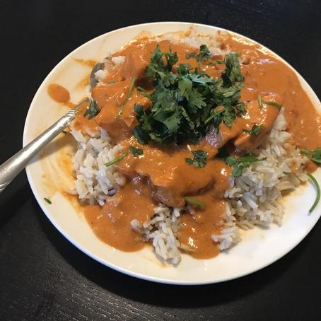
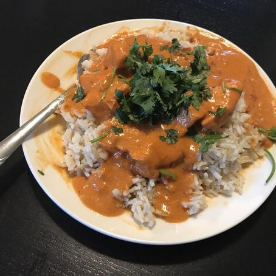

Okay so I really don't know how or why my images aren't showing up on my webpages and I'm too stubborn to ask for help without trying something first.
If all three of these image links break, I'll ask for help.

 
